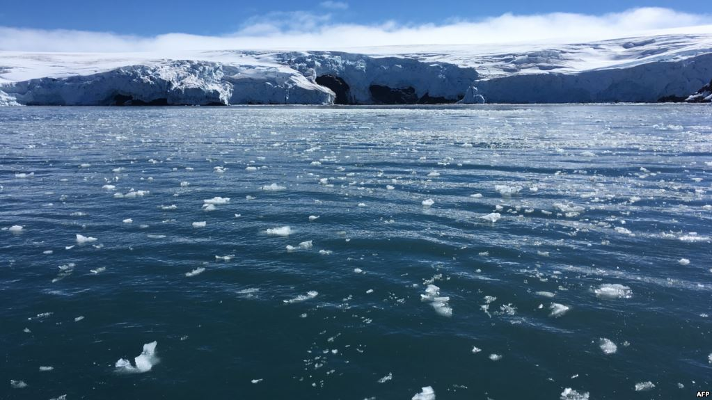

Berbagai ekosistem laut dan faktor yang mempengaruhinya
-
---------
- Antartika
Sebuah studi mengungkapkan dampak negatif dari menyebarnya daratan bebas es di Antartika dapat mengancam keberadaan spesies tumbuhan dan hewan unik dari benua tersebut.Peneliti program Antartika Australia, Aleks Traud dalam laporan USA Today menyatakan bahwa hal itu dapat menyebabkan penyebaran spesies invasif dan dalam jangka panjang bisa menyebabkan kepunahan spesies asli di Antartika. Spesies invasif adalah jenis hewan atau tumbuhan yang bukan asli daerah tertentu dan dapat menyebabkan kerugian baik itu dari segi ekonomi maupun lingkungan. Selain itu, perburuan predator tingkat atas seperti paus dan anjing laut di Antartika juga dapat menyebabkan ketidakseimbangan ekosistem.
- Arktik
Pemanasan laut dan pengembangan/pengeboran minyak bumi dan gas.
- Terumbu karang
Pariwisata dan limpasan sedimen menyebabkan penurunan kejernihan air.
- Hutan Kelp
Pemanasan laut dan ketidakseimbangan trofik yang menyebabkan menurunnya populasi karnivora dan meningkatnya populasi herbivora.
- Mangrove
Pengembangan pesisir dan badai/tsunami.
- Laut Terbuka
Perikanan komersial yang menyebabkan menurunnya populasi ikan dan puing puing laut.
- Rocky Shore
Pembangunan pesisir dan akses manusia untuk mengumpulkan dan menginjak organisme.
- Salt Marsh and Mudflat
Pembangunan pantai yang mengarah pada pemindahan air dan perusakan habitat; pencemaran air karena nutrisi, limbah, dan air limbah dari aktivias manusia.


Hal di atas menunjukan bahwa semua ekosistem laut terpengaruh dengan adanya kombinasi antara faktor alam dan antropogenik. Banyak kelompok warga, organisasi penelitian, dan pemerintah bekerja untuk mengatasi dampak ini dengan mempelajari ekosistem, menetapkan peratuan, mendidik masyarakat, dan membentuk kawasan lindung laut. Beberapa tindakan konservasi bersifat komprehensif dan terjadi dalam skala besar, seperti pembentukan KKL atau jejaring KKL. Tindakan konservasi lainnya terjadi di tingkat akar rumput atau oleh pekerjaan individu. Contohnya termasuk nelayan yang menggunakan alat navigasi dan pelampung tetap untuk menghindari kerusakan jangkar; kelompok aksi warga yang melakukan proyek pemantauan sukarela; kelompok masyarakat yang berpartisipasi dalam pembersihan pantai; dan keluarga yang memilih produk yang dapat diurai secara hayati atau alternatif untuk mengurangi penambahan nutrisi dan bahan kimia berbahaya ke saluran air terdekat mereka. Mintalah siswa untuk membuat daftar cara-cara agar mereka dapat terlibat dan membantu mengatasi dampak ini untuk memulihkan keseimbangan dan meningkatkan kesehatan laut dunia.
- Antartika